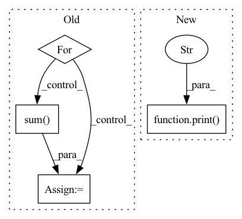

Pattern ID :4520
Before Change
]
pytorch_outputs = []
for inp, inp_src in zip(pytorch_inputs, input_values):
inp.copy_(inp_src)
inp.requires_grad = True
s = module(inp).sum()
s.backward()
pytorch_outputs.append(inp.grad)
print(pytorch_outputs[-1])
After Change
s = module(pytorch_input).sum()
s.backward()
print("Pytorch output:" )
print(pytorch_input.grad)
dace_module = DaceModule(module, backward=True)
In pattern: SUPERPATTERN
Frequency: 3
Non-data size: 4
Instances Fragment ID: 16377945
Project Name: spcl/daceml
Commit Name: 682aea4a22edc4a5268188596bcf443bd041a0a7
Time: 2021-03-01
Author: oliverrausch99@gmail.com
File Name: tests/autodiff/pytorch/test_pytorch.py
M Class Name: AnonimousClass
N Class Name: AnonimousClass
M Method Name: run_pytorch_module(3)
N Method Name: run_pytorch_module(2)
M Parent Class:
N Parent Class:
M File Name: tests/autodiff/pytorch/test_pytorch.py
N File Name: tests/autodiff/pytorch/test_pytorch.py
M Start Line: 13
M End Line: 45
N Start Line: 10
N End Line: 44
Before Change
]
pytorch_outputs = []
for inp, inp_src in zip(pytorch_inputs, input_values):
inp.copy_(inp_src)
inp.requires_grad = True
s = module(inp).sum()
s.backward()
pytorch_outputs.append(inp.grad)
print(pytorch_outputs[-1])
After Change
else:
s = dace_module(dace_input).sum()
s.backward()
print("Dace output:" )
print(dace_input.grad)
assert np.allclose(pytorch_input.grad, dace_input.grad)
Fragment ID: 16377944
Project Name: spcl/daceml
Commit Name: 682aea4a22edc4a5268188596bcf443bd041a0a7
Time: 2021-03-01
Author: oliverrausch99@gmail.com
File Name: tests/autodiff/pytorch/test_pytorch.py
M Class Name: AnonimousClass
N Class Name: AnonimousClass
M Method Name: run_pytorch_module(3)
N Method Name: run_pytorch_module(2)
M Parent Class:
N Parent Class:
M File Name: tests/autodiff/pytorch/test_pytorch.py
N File Name: tests/autodiff/pytorch/test_pytorch.py
M Start Line: 13
M End Line: 45
N Start Line: 10
N End Line: 44
Before Change
k, curr_quality, labels, m_cluster_centers = multiple_classes[current_slot]
// TODO vectorize more?
for single_slot, single_center in single_class:
dists = ((m_cluster_centers - single_center) ** 2).sum(dim=-1)
if (torch.any(dists < (self.config["diff_cluster_threshold"] * 0.5))):
new_slot = single_slot // TODO check if there is a place to move to
label_id = dists.argmin()After Change
if dists[label_id] > self.config["diff_cluster_threshold"] * 0.5:
// even the closest cluster is too far -- skip this re-use
if self.debug_prints:
print(f"Tried to reuse empty {current_slot}->{potential_slot} "
f"but clusters are too far {dists[label_id]}" )
continue
empty_att_slots.remove(potential_slot)
assigned.add(current_slot) Fragment ID: 16377946
Project Name: maria-korosteleva/garment-pattern-estimation
Commit Name: 4f0a08b91c9d5e37a8b529fb523bd47047507750
Time: 2021-07-26
Author: mariako@kaist.ac.kr
File Name: nn/metrics.py
M Class Name: ComposedPatternLoss
N Class Name: ComposedPatternLoss
M Method Name: _distribute_clusters(6)
N Method Name: _distribute_clusters(6)
M Parent Class:
N Parent Class:
M File Name: nn/metrics.py
N File Name: nn/metrics.py
M Start Line: 1134
M End Line: 1166
N Start Line: 1126
N End Line: 1182
Before Change
def vjp(self, vector):
start = 0
ret = torch.zeros_like(self._solution)
for size in _partition(self._solution):
end = start + size
if self.regularization == "l2":
val = 1.0 / size
else:
val = torch.softmax(self.s[start:end], dim=0)
ret[start:end] = val * torch.sum( vector[start:end])
start = end
return ret
After Change
return self._solution
def vjp(self, vector):
print("python" , _partition(self._solution))
if self.regularization == "l2":
return isotonic_l2_backward_cpu(self.s, self._solution, vector)
else:
return isotonic_kl_backward_cpu(self.s, self._solution, vector) Fragment ID: 16377942
Project Name: teddykoker/torchsort
Commit Name: 2526a5f4a6b22c24e6233522af604769c8d96ed1
Time: 2021-03-21
Author: teddy.koker@gmail.com
File Name: torchsort/ops.py
M Class Name: Isotonic
N Class Name: Isotonic
M Method Name: vjp(2)
N Method Name: vjp(2)
M Parent Class:
N Parent Class:
M File Name: torchsort/ops.py
N File Name: torchsort/ops.py
M Start Line: 139
M End Line: 149
N Start Line: 142
N End Line: 148